Trace Terra is a computational-design and robotic-fabrication research project that asks the landscape what it needs, then prints it. Topographic and environmental data from the Tabernas Desert, southern Spain, are translated — through Grasshopper, CFD, and custom extrusion tooling — into multi-material clay structures designed to host biological soil crust: the cyanobacteria, lichens, and mosses that stabilise dryland soils and capture atmospheric carbon.
The work was developed inside The Arid Group (TAG) at UCL Bartlett — a three-person studio I ran alongside Sarvin Farhangi and Humberto David Gil Garzon — and extends into a peer-reviewed publication at the IAAC BioDLF, a poster at Circular Strategies 2025, and a masterclass paper under review at DigitalFUTURES CDRF 2026.
My role sat at the interface between the computational model and the physical print: terrain-to-toolpath logic, material-mix development, and all the end-effector and robot-cell engineering needed to actually make a brick.
Context — arid lands & climate.
01 / CONTEXTDrylands cover about 41% of the Earth's land surface and are the fastest-warming biome on the planet. In Almería, the Tabernas Desert receives under 250 mm of annual precipitation, sits at 40 °C summer peaks, and is losing topsoil faster than it can be re-formed. The surface that once held it together — a thin, living crust of microbes — is disappearing with it.
The site visit to Tabernas in November 2024 grounded the project in that reality: dry riverbeds cut through mountains that look fertile from a distance and are essentially sterile when you're on them.
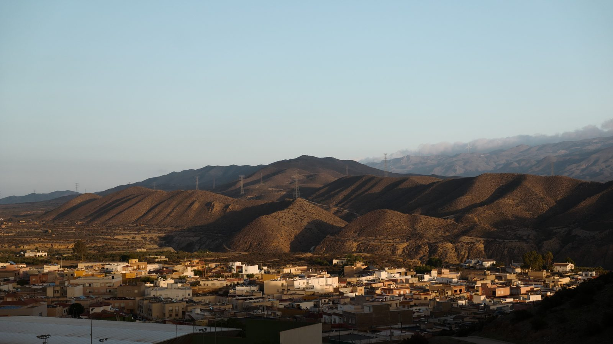
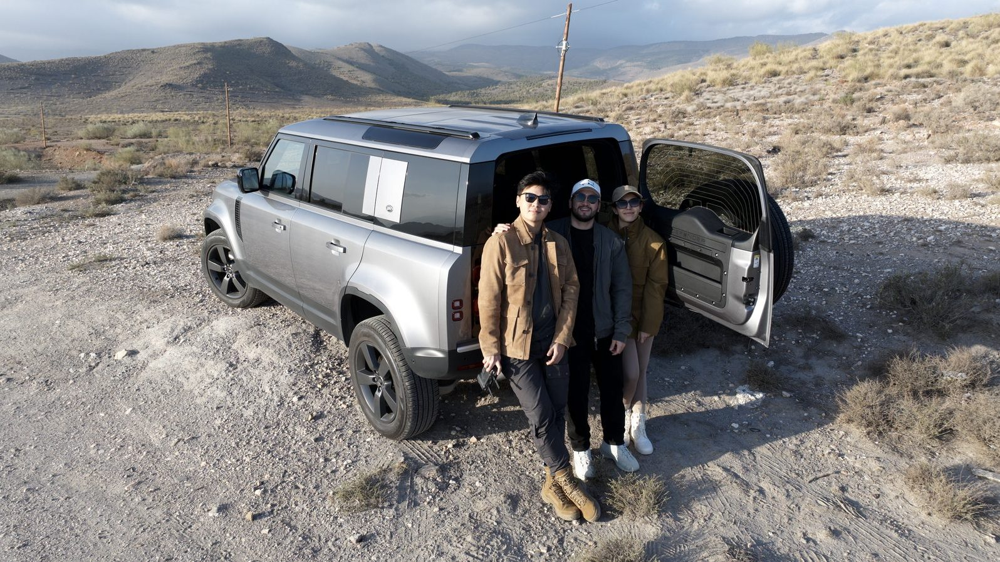
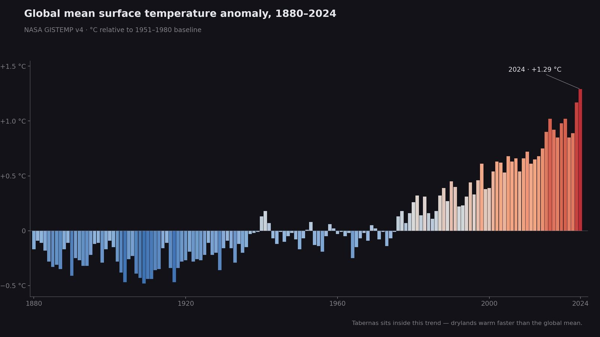
Research question.
02 / QUESTIONCan topographic, climatic, and biological data directly drive fabrication parameters — producing structures that are functionally responsive to their site and capable of hosting living biological soil crust?
Concretely: if we already know where the wind hits hardest, where the water collects, and where solar exposure peaks on a real piece of terrain, can those values be pushed straight into a robotic toolpath — so that every square metre of printed surface is tuned for the microbial community it needs to grow?
Biology — the living system.
03 / BIOLOGYBiological soil crust (BSC) is a community of cyanobacteria, lichens, mosses, and fungi that grows across the top millimetres of dryland soil. A mature crust reduces wind erosion on horizontal surfaces by roughly 85%, binds sand into stable aggregates, and fixes both carbon and atmospheric nitrogen. It's effectively the skin of the desert — fragile, self-healing, and almost invisible.
Trace Terra's inoculation mix is tuned around three organisms: Nostoc commune for nitrogen-fixing cyanobacterial cover, Rhizobium spp. to support pioneer vegetation, and Actinomycetes to stabilise decomposed organic matter. Ratio 3 : 1 : 1, delivered in a growth medium that the printed surface can actually hold onto.
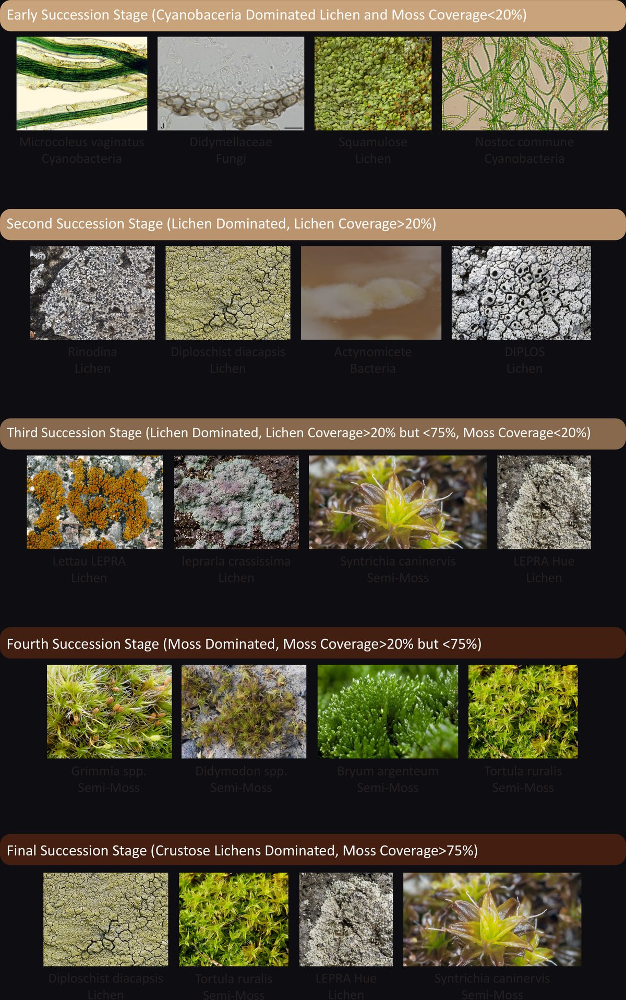
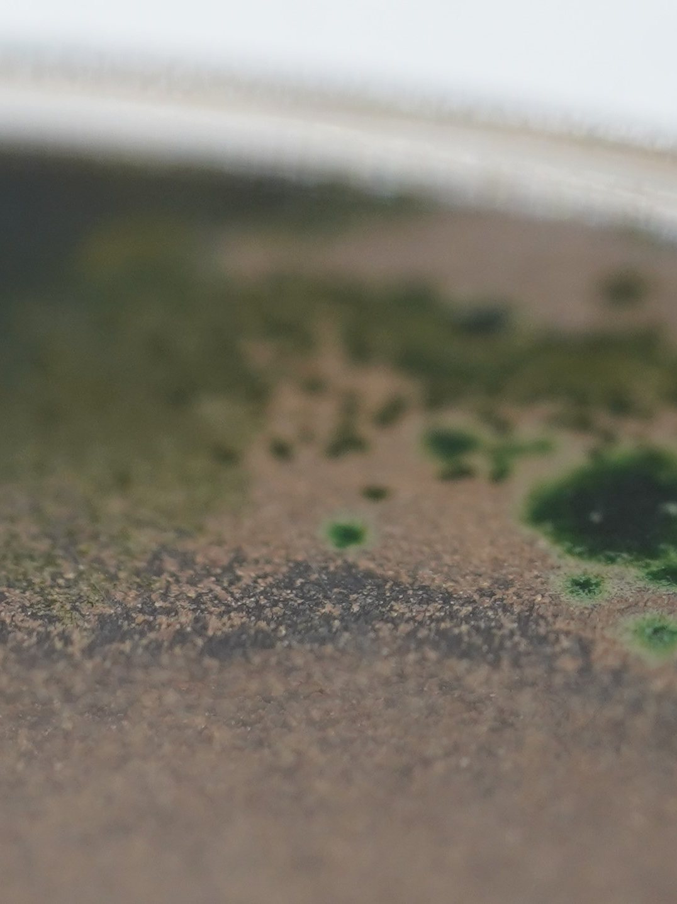
Computational workflow.
04 / METHODThe pipeline starts with raw terrain: elevation meshes, slope and aspect rasters, wind-exposure and solar-irradiance maps derived from GIS and local climate datasets. Those inputs are imported into Grasshopper, where a parametric system decides four things for every location on the site — orientation, aperture, surface texture, and extrusion toolpath density.
Airflow and moisture behaviour are validated in Autodesk CFD, then fed back into the Grasshopper definition to refine placement and geometry. The resulting toolpaths can be produced at any resolution the robot can print: from single bricks for material testing up to full wall sections.
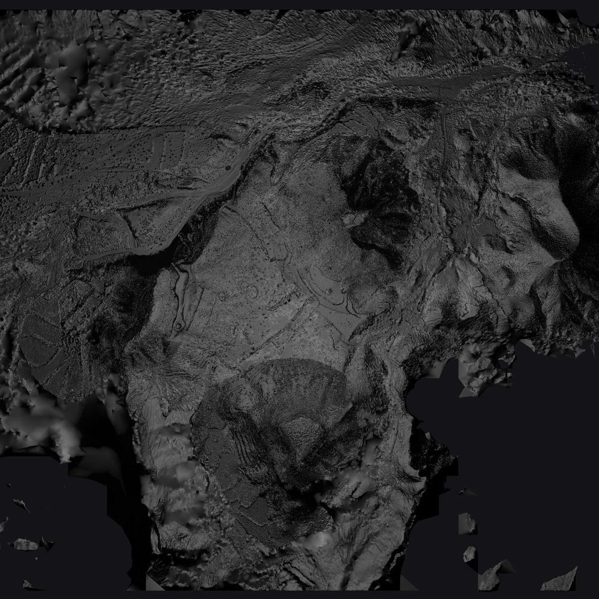
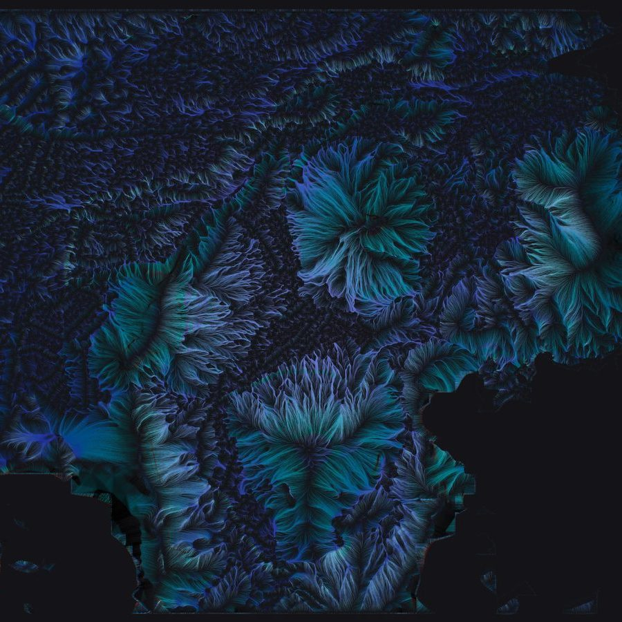
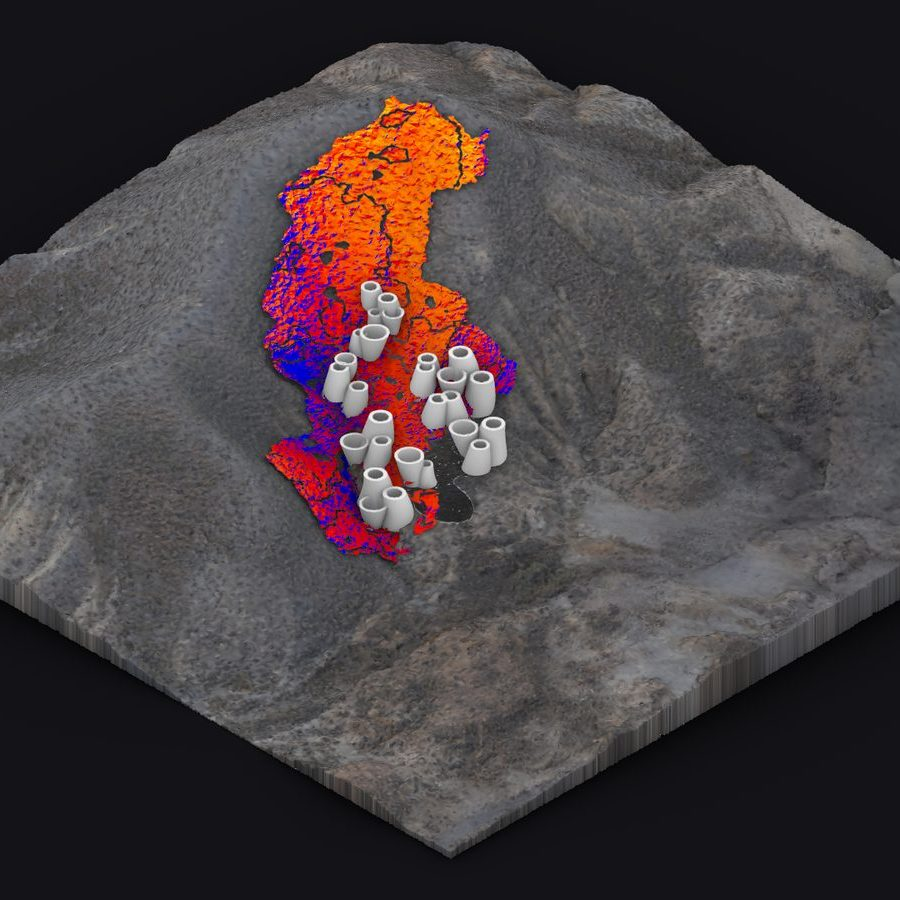
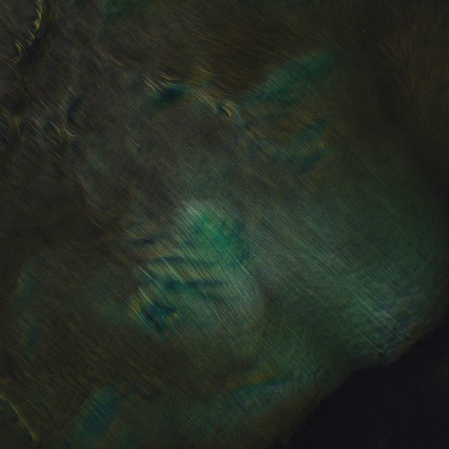
Material system — three layers, one wall.
05 / MATERIALA single clay mix can't do everything the project needs, so we developed a three-layer wall. The outer layer is a porous clay-and-fibre blend tuned to host the BSC inoculation — rough enough for biofilm attachment, permeable enough to hold water long enough for microbes to use it. The middle layer uses an olive-pomace binder to create a hydrophobic retention boundary: water stays on the living face instead of draining through to the core. The inner layer is the structural workhorse — clay reinforced with hemp and palm fibres, set with alginate.
The three mixes were developed from a sequence of soil-substrate trays, testing how different fibre loads, binders (chitosan, alginate, methylcellulose, gelatine), and water ratios affected printability, dry strength, and biocrust retention. Each mix was then tuned for flow behaviour in the extruder.
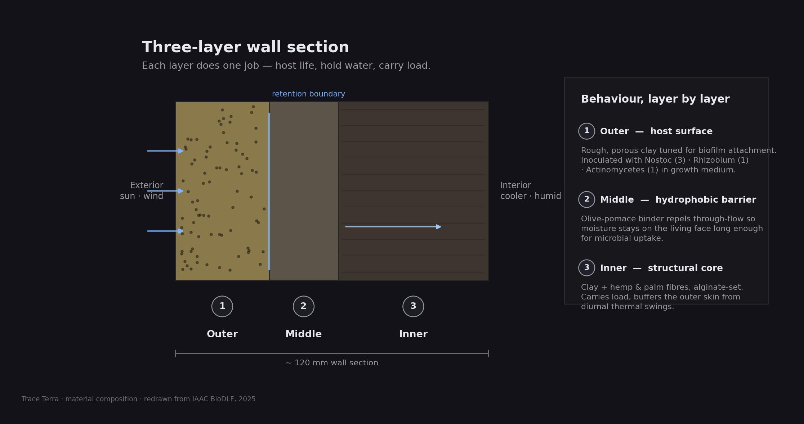
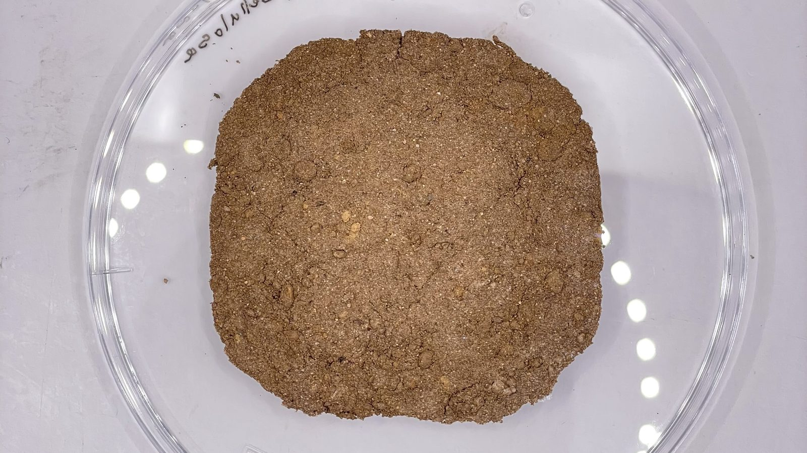
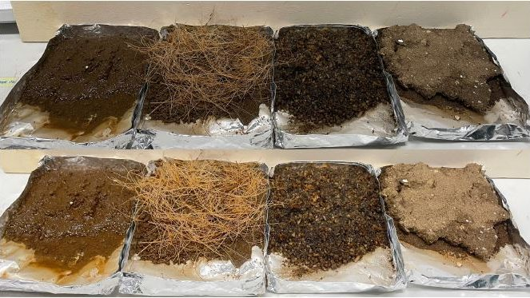
Robotic fabrication.
06 / FABRICATIONThe fabrication work ran across two robots at UCL Here East and the WASP 40100 delta printer. The primary production platform was a KUKA LBR iiwa running a custom pneumatic paste-extrusion end effector I designed and built: dual-pressure control so the outer and inner layers can flow at independent rates, an exchangeable cartridge, and a nozzle geometry matched to the three mixes.
I also set up and validated a second rig on a KUKA KR60 L45 — a 60 kg-payload, 2430 mm-reach industrial arm — to test whether the workflow would scale beyond the iiwa's build envelope. The rig hardware was built from scratch; the extruder malfunctioned mid-trials, which pushed the project back onto the iiwa but produced a working larger-format rig that subsequent cohorts can pick up.
The toolpath generator takes the Grasshopper geometry and turns it into robot-ready motion commands — infill density, spiral direction, layer-bonding dwells, and pressure ramps — all parameterised from the environmental model. Across iterations, setup inefficiencies dropped by roughly 40% as we standardised the nozzle-change and mix-prime routines.
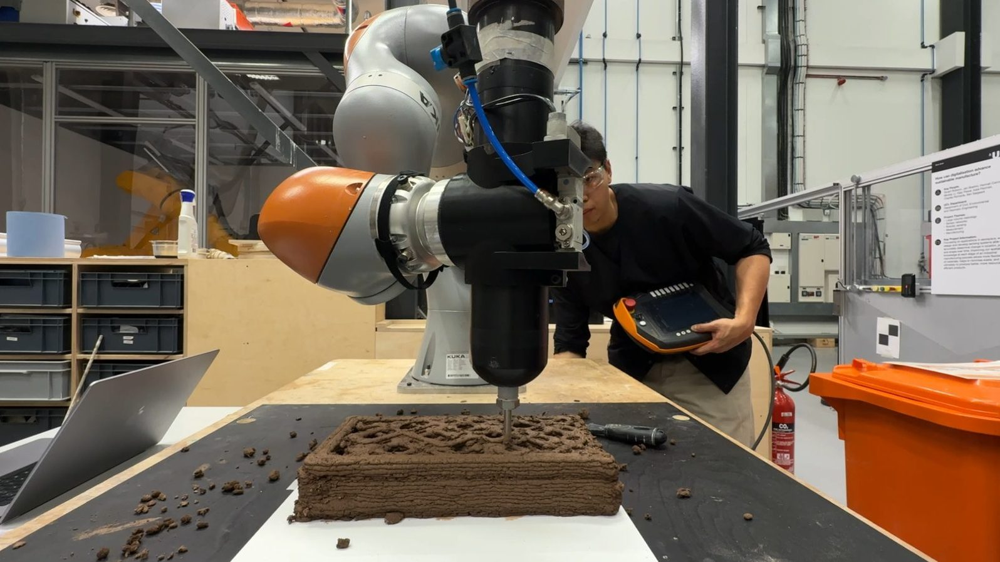
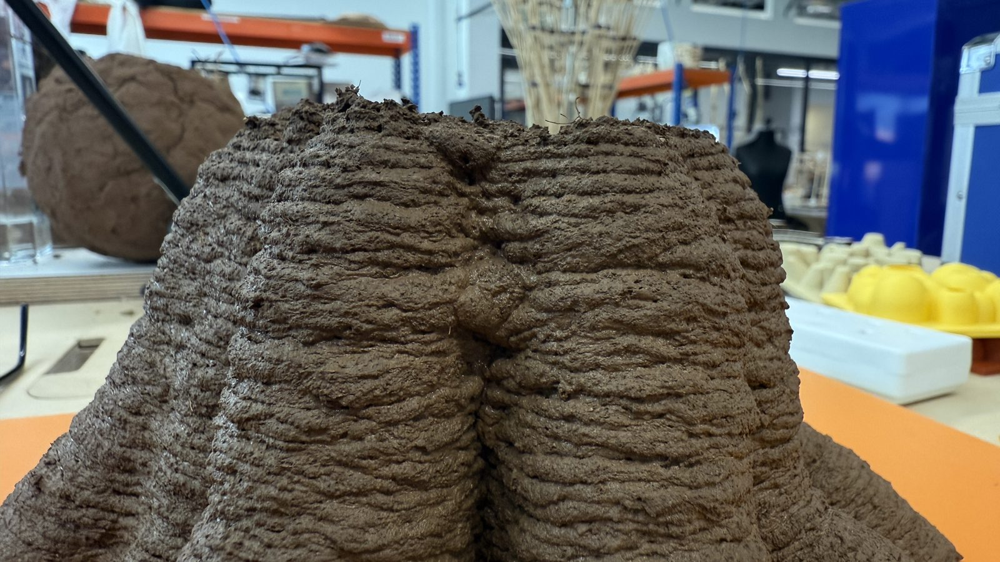
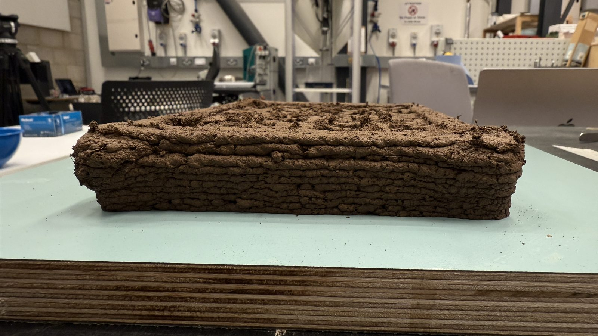
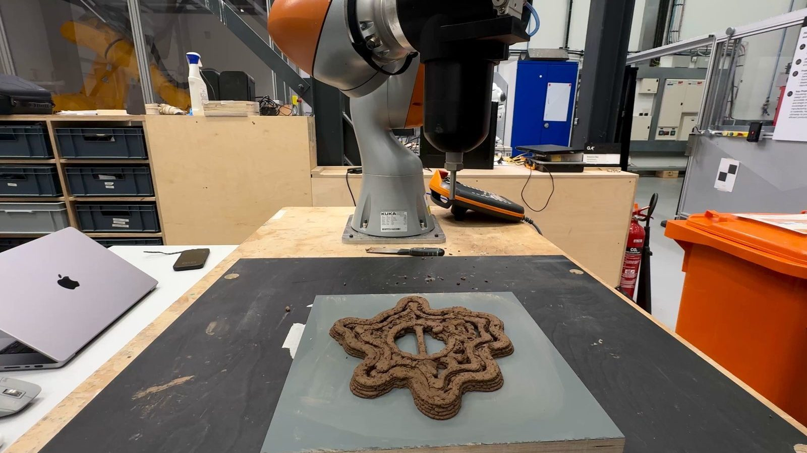
Testing & evidence.
07 / TESTINGThermal performance was measured with a FLIR imager across solar-heating cycles. Under a 67 °C exposure, the diamond-infill brick held its interior surface roughly 3–4 °C cooler than a flat equivalent for the duration of the test — a small but consistent buffering effect that tracks the CFD predictions for airflow through the infill cavities.
Moisture-retention and biocrust-adhesion testing continued on soil trays in parallel, with weekly measurements of colony-forming units for the Nostoc inoculation. Early-stage growth confirmed that the outer-layer mix holds inoculant better than the structural mix on its own, validating the split-layer approach.
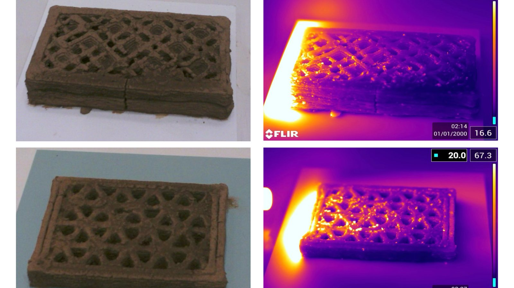
Top row: 02:14 into exposure — surface still heating. Bottom row: full exposure at 67.3 °C ambient — the diamond-infill geometry routes heat along the ribs while the interior face stabilises cooler.
Final proposal.
08 / OUTCOMEAt full scale, the proposal is a cluster of terrain-responsive towers and low walls distributed across a selected Tabernas catchment — each element placed and shaped by the same Grasshopper model that drives its toolpath. Towers channel wind to shaded alcoves, walls terrace the slope to trap moisture, and every exterior face is a microbial host surface inoculated at the point of printing.
The masterplan doesn't pretend to re-green the desert. It defines a small, instrumented footprint where biocrust can be re-established measurably faster than on bare soil — a template that can be re-deployed across other degraded drylands by swapping only the input datasets.
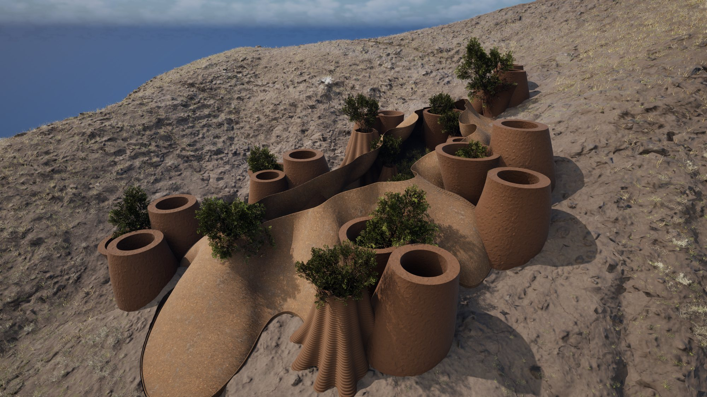
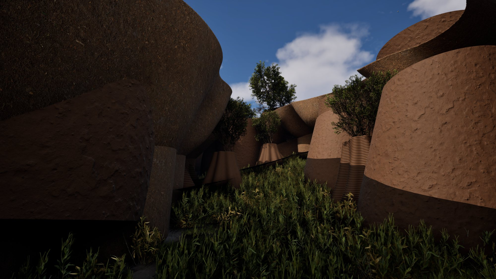
Publications.
09 / OUTPUTSThe research has produced three academic outputs, led by the peer-reviewed IAAC BioDLF paper co-authored with Brenda Parker, Marcos Cruz, Anete Salmane, Jingyuan Meng, and Pradeep Devadass.
- Peer-reviewed paper Trace Terra: Integration of biological soil-crust microbiota into robotically extruded structures for arid contexts
- Poster — accepted Trace Terra: Awakening the Soil for Futures to Come
- Under review Trace Terra: Integration of biological soil-crust microbiota into robotically extruded structures for arid environment contexts
The strongest result of Trace Terra wasn't any single print — it was proving that the whole loop closes. Landscape data drove toolpath generation, toolpath generation drove physical prints, physical prints validated the CFD predictions, and measured biocrust growth fed the next iteration of the outer-layer mix. That's not a styling exercise; that's an engineered workflow that happens to end in something alive.
The harder lesson was about ownership. Pulling the pipeline end-to-end — data, parametric definition, material, extruder hardware, robot cell — made every assumption testable. When the KR60 extruder failed mid-trials, the answer wasn't to outsource it; it was to diagnose it, move back to the iiwa, and document what the larger rig needed next. Owning the full stack is slower, but it's the only way to know what the model is actually telling you.